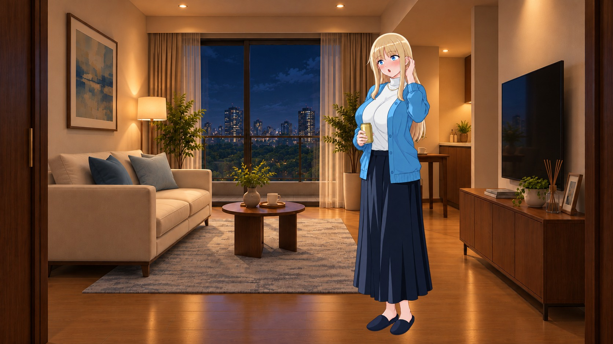
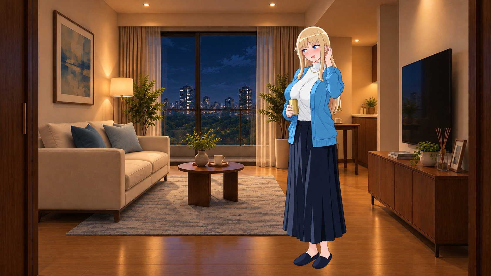

トイレ前後・湯上がり・宅飲み
新規の透過人物4枚。トイレは入室前と手洗い後、風呂は着替えた後の髪拭きとドライヤー。便座使用中・入浴中の画像を生成できたという意味ではありません。
トイレ前後
前回の便座座り姿は生成判定で出力できませんでした。今回は入室前後の日常動作へ範囲を変えた試作です。ノックの相手となる扉との接続は未完成で、背景合成は仮の場所合わせです。
お風呂上がり
今回はパジャマ姿で髪を乾かす2場面。前回のバスタオル姿もあります。ドライヤーの向き、衣装間の襟・縁取り・ポケットの整合は仕上げ前です。
宅飲みは、こちら
追加：サークル男子3人に囲まれて飲む・既存の座り酔い画像を使った3場面
以下は前回作成済みの場面です。前回の一覧には、借りた上着・仮装会・翌朝の約束などの案もあります。飲酒する登場人物は20歳以上という仮の制作条件です。
笑いのツボが合う
宅飲み中、相手の話がツボに入って笑う。
前回の試作を再掲。新規生成枚数に含めません。
透過PNG
みんなの前で言わないで
酔って言った約束をみんなの前で繰り返されて動揺。
前回の試作を再掲。新規生成枚数に含めません。
透過PNGそれ、誰にでも言ってない？
褒め言葉を誰にでも言うのかと拗ねる。
前回の試作を再掲。新規生成枚数に含めません。
透過PNG
褒められて気が緩む
褒められて気が緩む。こちらは笑顔との差が小さい試作。
前回の試作を再掲。新規生成枚数に含めません。
透過PNG